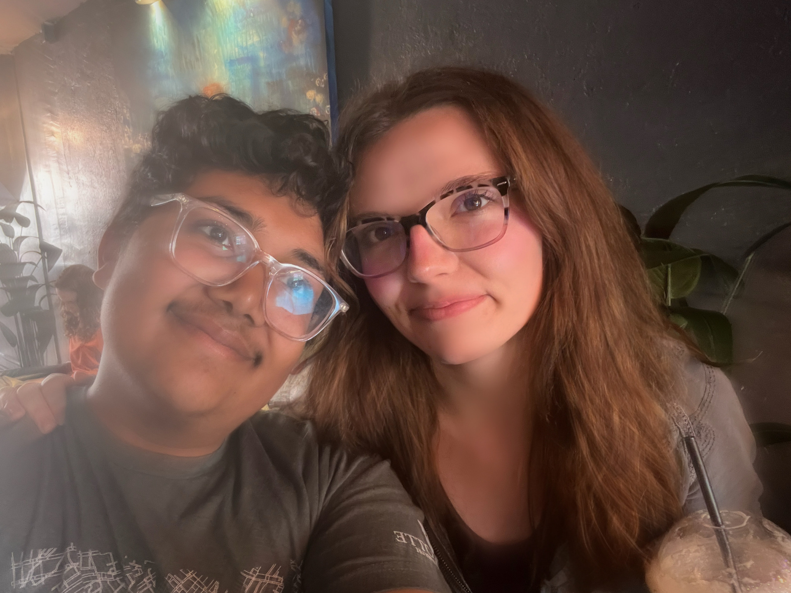

Introduction
Caroline McGowan
Learning web development, one line of code at a time.
Personal Background
I am a student at UNCC, from PA, born in Maine though, and lived in NC for a bit during childhood, which is why I wanted to come back here for school.
Professional Background
I interned at Verizon this summer in Network Automation.
Academic Background
I am a senior in computer science, with a systems and networks concentration.
Background in this Course
This is my first time taking a web development course.
Primary Computer Platform
I use an old Macbook
Courses I'm Taking
- ITIS 3135
- ITSC 2175
- ITSC 3155
Funny/Interesting Story
I once fainted due to the stress of a calc exam
Something Else to Share
I'm looking forward to learning a lot in this course.